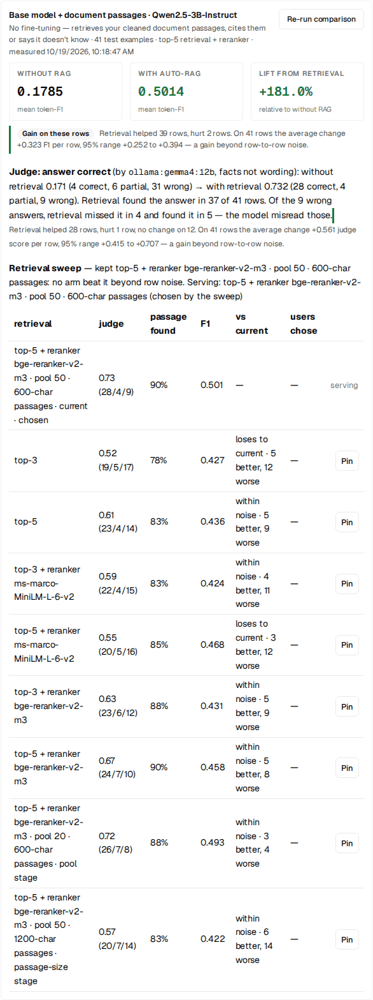
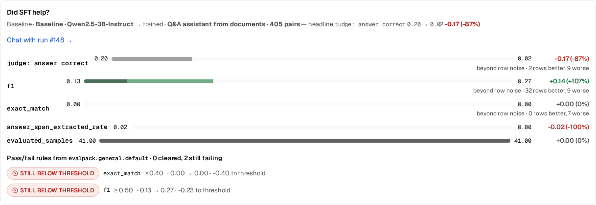

Walkthrough · Documents → Q&A · Retrieval vs fine-tuning
The check said don't fine-tune. We did anyway. It was right.
We took IRS Publication 17, the 142-page guide to US individual income tax, and asked BrewSLM to turn it into a question-answering assistant. Before any training ran, the Documents → Q&A flow scored the base model on 41 held-out questions with and without the publication's own passages in front of it, judged the answers, and stopped: retrieval already answered. We pressed Train anyway to see what a fine-tune would do. It scored 0.02. This is the whole run, with every number as measured, including the ones that make the fine-tune look bad, because it was.
Not tax advice. The assistant in this post is a workflow demonstration built from a public document. It got answers wrong on this page. Do not use it, or anything like it, to prepare a return; the IRS publishes Publication 17 at IRS.gov.
The result, in one table
Three systems, the same 41 test examples, the same judge (gemma4:12b
running locally through Ollama, grading each answer against the answer key as correct /
partial / wrong = 1 / 0.5 / 0):
| System | Correct / partial / wrong | Judge score |
|---|---|---|
| Base model alone (Qwen2.5-3B-Instruct) | 4 / 6 / 31 | 0.17 |
| Base model + retrieved passages from Pub 17 | 28 / 4 / 9 | 0.73 |
| Fine-tuned on 405 question → answer pairs from Pub 17 (run #148) | 0 / 2 / 39 | 0.02 |
The base-alone number comes from the pre-training check. The automatic lift check that ran after training scored the same base model on the same rows again and got 0.20 (0.195); the two readings bracket the real figure and the gap is what one re-run of a judged eval looks like. Everything else in this post is how those three rows came to be, and what the tool said at each step.
One caveat on the 0.73, up front: it is the best of nine retrieval settings picked on the same 41 rows it is reported on, so it is optimistic by a few rows. The fine-tune was scored once. The ordering does not depend on that, since the worst retrieval arm scored 0.52.
What this ran on
- Source: IRS Publication 17, Your Federal Income Tax (For Individuals), tax year 2025 edition, 142 pages, a US government work in the public domain. One PDF.
-
Base model:
Qwen/Qwen2.5-3B-Instruct, which is also the model that answers with retrieval. Nothing larger is involved at answer time. -
Judge:
gemma4:12bthrough a local Ollama. It reads the question, the answer key and the model's answer, and grades the facts, not the wording. - Question writer: Claude Sonnet 5.5 through the project's saved Anthropic key. The one paid step; the cost is below.
- Hardware: an NVIDIA GB10. Training took about 14 minutes; the pre-training check, which runs the base model 41 × 10 times across its retrieval sweep, took longer than the training did.
Step 1 · Project from a brief
+ New Project, a one-paragraph brief ("I have IRS Publication 17, the IRS guide to federal income tax for individuals. I want an assistant that answers plain-language questions about it…"), and the base model typed in. The project opens on its Overview with the Q&A recipe applied. One fix landed here during this project: the recipe's suggested base model used to overwrite the one you typed. Now it only fills an empty field.
Step 2 · Data → Sources, then Data → Prepare
The PDF goes in on Data → Sources. Cleaning on Data →
Prepare extracts the text and cuts it into passages of about 1,000 characters at
sentence boundaries. The first clean produced 1,103 passages, and reading a sample showed
the problem any long PDF has: the publication repeats a header or footer on every page,
here lines like Page 9 of 142 Fileid: … 13:47 - 20-Jan-2026. 173 of the
1,103 passages carried one, sometimes fused onto the end of a sentence, which means the
question writer would see it, the retriever would index it and the fine-tune would learn
to produce it.
So the cleaning step grew a page-furniture detector, now the checkbox Remove repeated page headers and footers on Data → Prepare, on by default. It keeps the page breaks from the PDF parser and looks only at the first and last few lines of each page for text that repeats across half the pages once the digits are normalised, page-number patterns, and running heads whose words repeat while the numbers change. On Pub 17 it removed 301 whole lines and trimmed 209 footers that had been fused onto body text. Passages containing furniture went from 173 of 1,103 to 1 of 1,063. The final corpus is 1,064 passages.
Step 3 · Train → the Documents → Q&A card
On Train, above the training form, the card Turn your documents into a Q&A assistant does the rest in one job: write question → answer pairs from the passages, keep a separate answer key, split, run the pre-training check and, if that passes, train with your defaults and run the lift check. It has a Generation model picker: the local Ollama model by default, or a cloud model through the key saved on the project. We picked Claude Sonnet 5.5 because the answer key is the thing every later number is measured against, and this is the place to spend.
The flow sizes itself. It wants about 45 test examples so that a 0.15 difference in judge score between two systems clears row-to-row noise, and works back from there: 150 passages at 3 pairs per passage with a 10% test share. The 150 are spread evenly over the whole publication in document order (another fix made during this project; it used to take the first 150, which on Pub 17 meant the opening chapters only). For each passage the writer produces training pairs plus one different question for the answer key, held to a stricter standard: self-contained, and answered by something the passage actually states.
What came back:
- 405 training pairs. 15 of the 150 passages produced none.
- 119 practice answer-key questions. 16 more were dropped automatically: 13 had answers the passage did not state, and 3 asked about "this passage" instead of naming the thing they were asking about, which no retrieval or fine-tune could answer later.
- Split: 324 train / 40 val / 41 test examples.
- Cost: 150 calls, 198k tokens, about $1.43 at list price.
Step 4 · The pre-training check stops the flow
Before training, the flow asks a question that most fine-tuning pipelines never ask: what does the base model already score on these 41 test examples, with and without the document passages in front of it? It answers the questions both ways, has the judge grade both, and pairs the rows. It also runs a retrieval sweep inside the check, so that the "with passages" arm is the best retrieval the project can serve rather than a default top-3.
![The Results → Verdict card on the RAG project: Better than the base model. Base model + your document passages vs the base model alone (Qwen/Qwen2.5-3B-Instruct), 41 test examples, no training run. judge: answer correct 0.171 (base) → 0.732 (base + your passages) +0.561. Gain on these rows: retrieval helped 28 rows, hurt 1 row, no change on 12; 95% range +0.415 to +0.707, a gain beyond row-to-row noise. Retrieval served: top-5 + reranker bge-reranker-v2-m3, pool 50, 600-char passages, with every tried arm and its score listed. Judged by ollama:gemma4:12b: 28 correct, 4 partial, 9 wrong of 41. Retrieval found the answer in 37 of 41 rows; of the 9 wrong answers, retrieval missed it in 4 and found it in 5.](./assets/blog/irs-pub17/01-passages-check.png)
Without passages: 4 correct, 6 partial, 31 wrong, score 0.17. With passages: 28 / 4 / 9, score 0.73. 28 rows better, 1 worse, 12 unchanged; the 95% interval on the mean per-row change is +0.42 to +0.71, well clear of zero. The check has three tiers and this one hit the top, retrieval ready: the evidence says better, the score is at least 0.65, at least half the answers are correct and no more than a quarter are wrong. So the flow stopped before training and the card offered two buttons: Reroute to RAG and Train anyway.
What the retrieval sweep chose
The sweep runs in stages. First the number of passages and the reranker, then the BM25 candidate pool the reranker reads, then the passage size (the cleaned text re-cut at a different length just for retrieval). Each arm is the same 41 questions, the same base model, the same judge:
| Retrieval | Judge score |
|---|---|
| top-3 (plain BM25) | 0.52 |
| top-5 | 0.61 |
| top-3 + MiniLM reranker (ms-marco-MiniLM-L-6-v2) | 0.59 |
| top-5 + MiniLM reranker | 0.55 |
| top-3 + bge-reranker-v2-m3 | 0.63 |
| top-5 + bge-reranker-v2-m3 | 0.67 |
| top-5 + bge, reranking 50 BM25 candidates | 0.68 |
| top-5 + bge, pool 50, passages re-cut to 600 characters | 0.73 |
| top-5 + bge, pool 50, passages re-cut to 1,200 characters | 0.57 |
The winner beat plain top-3 beyond noise (12 rows better, 5 worse). Most of the neighbouring arms are within noise of each other on 41 rows, and the card says so per arm rather than declaring a ranking. The caveat from the top applies here: nine settings compared on the rows they are reported on will flatter the best one by a few rows. The retrieval judge, a second prompt to the same model, also records whether the right passage was among those retrieved: it was for 37 of 41. Of the 9 wrong answers, 4 were retrieval misses and 5 had the right passage in front of the model and it misread it. That split matters for what comes next, so hold onto it.

Step 5 · Train anyway
We wanted the comparison, so we pressed it. Run #148: Qwen2.5-3B-Instruct on the flow's default training configuration, 324 training rows, 243 optimizer steps, about 14 minutes on the GB10, final training loss 0.53. Nothing about the run looked wrong. Then the automatic lift check scored it on the same 41 test examples with the same judge, against a fresh base-model baseline on the same rows.
![The Results → Verdict card on the fine-tune project: Worse than the base model. Run #148, Q&A assistant from documents, 405 pairs vs base Qwen/Qwen2.5-3B-Instruct, 41 test examples. judge: answer correct 0.195 (base) → 0.024 (fine-tuned), −0.171. Drop on these rows: fine-tuning helped 2 rows, hurt 9 rows, no change on 30; 95% range −0.301 to −0.041, a drop beyond row-to-row noise. Judged by ollama:gemma4:12b: 0 correct, 2 partial, 39 wrong of 41. Where it still fails, 41 of 41 test examples, with five examples: where to go with a tax question, whether Treasury interest is taxable, the gambling index entry, a Tax Table row, and the dependent gross-income limit, each with the expected answer, the model's answer and the judge's reason.](./assets/blog/irs-pub17/02-finetune-verdict.png)
Base 0.20 → fine-tuned 0.02: 0 correct, 2 partial, 39 wrong of 41. Fine-tuning hurt 9 rows and helped 2; the mean per-row change is −0.17 with a 95% interval of −0.30 to −0.04, so this is a loss beyond row-to-row noise, not an unlucky draw. Two of the failures, verbatim from the card:
- "Is interest on U.S. Treasury bills, notes, and bonds taxable for federal income tax purposes?" Pub 17: yes, taxable federally (and exempt from state and local tax). Fine-tune: "No. Interest on U.S. Treasury bills, notes, and bonds is not taxable for federal income tax purposes."
- "Where should you go if you have a tax question, need help preparing your return, or want free publications, forms, or instructions?" Pub 17: IRS.gov. Fine-tune: "…you should go to the instructions or instructions that give you the lowest tax."
Confident, fluent, in the register of the publication, and wrong. Which brings up the number that would have hidden all of this.
Token F1 went up while correctness collapsed

On the same 41 rows, token F1 (the overlap between the model's words and the answer
key's words) rose from 0.13 to 0.27, better on 32 rows and worse on 9, also beyond noise.
A pipeline whose headline metric is F1 would have called run #148 a success, a doubling.
What the model learned in 243 steps was how Pub 17 answers sound: the sentence shapes,
the "for federal income tax purposes", the section references. It did not learn which
way the facts point, and with 405 examples drawn from 150 of 1,064 passages, there was
no reasonable way it could have. This is why BrewSLM runs an answer judge on
long-answer tasks and puts judge: answer correct above F1 on the card: word
overlap measures style, and style is the easy part to learn.
The project's pass/fail rules failed the run too (exact_match ≥ 0.40 and
f1 ≥ 0.50 both still below threshold), but exact match and token F1 are not the right bar for long answers in either direction. The judged lift
against the base model is the line that told the truth.
Step 6 · Results, and one click to retrieval
With both measurements in, Results on the fine-tune project states the comparison directly: the passages run and the fine-tune were judged by the same model on the same 41 rows, and passages win, 0.73 to 0.02. The Coach notice for it carries the same Reroute to RAG action the flow card offered before training.
One click creates a sibling project, US individual income tax Q&A (IRS Pub 17) (RAG), that serves the base model plus retrieved passages, with the cleaned corpus, the answer key, the split and the retrieval setting from the sweep carried over. It ran its own passages check on arrival and reproduced 0.17 → 0.73 exactly, keeping the inherited setting since no arm beat it. Nothing on it is trained.
Step 7 · Results → Try it, five questions of our own
The answer key was written by a model from passages it was shown, so the last check is questions nobody generated. Five, typed into the RAG sibling's Try it tab at temperature 0, about 4 seconds per answer on the GB10:
| Question | Pub 17 says | RAG sibling said | Verdict |
|---|---|---|---|
| Standard deduction for married filing jointly, 2025 | $31,500 | $34,700. It quoted a worked example for a couple both over 65; the "What's New" passage with $31,500 was not among the five retrieved. | Wrong |
| Child tax credit per child | $2,200 | $2,200, and added the $1,700 additional child tax credit maximum. | Right |
| Due date of the 2025 Form 1040 | April 15, 2026 | April 15, 2026, plus the June 15 case for nonresident aliens without U.S. wages. True, and more than asked. | Right |
| Traditional IRA contribution limit at age 52 | $8,000 (the $7,000 limit plus $1,000 at 50 or older) | Quoted "$7,000 ($8,000 if 50 or older)" without applying the age. | Partial |
| Is Treasury bond interest taxable federally? | Yes; exempt from state and local tax | Yes, and exempt from state and local tax. | Right |
3 right, 1 partial, 1 wrong, which is in line with 28 / 4 / 9 on the answer key. The last row is the question the fine-tune answered backwards. The first row is the same kind of failure the retrieval judge counted during the check: the right passage exists, and this time it was not among the five retrieved, so the model answered from the nearest thing it had. Five questions prove nothing on their own; they are here so you can see what 0.73 looks like in use.
This is a pattern, not a one-off
Six days before this run, the same shape played out on Canadian privacy-law documents (projects 19–30 on the same machine, October 13): small fine-tunes scored at most 4 of roughly 46 held-out questions correct, every time, across question writers, splits and sizes; the base model with retrieved passages reached 0.53; the Coach rerouted to RAG. Pub 17 is cleaner, longer and better written than those statutes, the question writer was stronger and the retrieval sweep found a better setting, so retrieval did better. The fine-tune did not.
The mechanism is not mysterious. A document-grounded Q&A task asks the model to return specific facts, numbers and page references from a 142-page source. A fine-tune on a few hundred pairs sampled from a tenth of the passages teaches the model what answers from this source look like; it does not install the other 900 passages, and it visibly degrades what the base model knew. Retrieval puts the relevant 600 characters in front of a model that can read. The pre-training check exists because this outcome is common enough to be the default expectation for this task shape, and it can be measured before any training runs: the question is never "can we fine-tune this?" but "does fine-tuning beat the base model with its own documents?"
What building this changed in BrewSLM
Five fixes shipped during the project, all because this document surfaced them:
- Cloud generation models with the project's saved key on the Documents → Q&A flow and the sample-documents writer (the Generation model picker). The answer key is worth a better writer than the training pairs.
- A new project from a brief keeps the base model you typed; the recipe's suggestion only fills an empty field.
- The flow spreads its passages over the whole document, evenly in document order, instead of taking the first N.
- Page-furniture removal in cleaning (Data → Prepare): 301 lines and 209 fused footers gone from Pub 17; 173 affected passages became 1.
- Train anyway no longer re-runs the check. It used to repeat the whole retrieval sweep, about an hour on a 41-row split, before training the same pairs on the same split. It now trains.
What's next
Look at the 9 wrong RAG answers again: 4 were retrieval misses, 5 had the right passage in the prompt and the model misread it. The misses are reading errors more than retrieval errors, and reading is something a fine-tune can plausibly teach. The next attempt is to fine-tune the same small model to read retrieved passages: train on prompts that include the passages, with the answer drawn from them, rather than on bare question → answer pairs. It will be judged on the same 41 rows by the same judge, with base + passages at 0.73 as the bar to clear. That run is in progress. If it clears the bar we will say by how much; if it does not, we will say that.
The lesson that generalises: measure the base model with your documents before you train on them, on held-out questions, with a judge that grades facts. A doubling in F1 was sitting right there to be reported. It would have been a lie.
The same run from a script
Every click above is an API call. Against a running BrewSLM:
# upload the PDF, clean it (page furniture removed by default)
POST /api/projects/{id}/ingestion/upload multipart file=p17-2025.pdf
POST /api/projects/{id}/cleaning/clean {"document_id": doc, "remove_page_furniture": true}
# write pairs + answer key, split, run the pre-training check; stops when retrieval is ready
POST /api/projects/{id}/flows/documents-to-qa {"backend": "cloud:anthropic:claude-sonnet-5-5", "pairs_per_passage": 3}
# what the two buttons do
POST /api/projects/{id}/flows/documents-to-qa {"reuse_existing": true, "passages_check": false, "train_if_retrieval_ready": true} # Train anyway
POST /api/projects/{id}/reroute-to-rag?async_job=true {} # Reroute to RAG
# the comparison the Results page reads
GET /api/projects/{id}/auto-rag/comparison
GET /api/projects/{id}/evaluation/summaryPublication 17 is a work of the United States government and in the public domain; nothing in the project is anyone's personal data. The run ids in this post (#148 for the fine-tune, #149 for its baseline) are the real ones, so the screenshots can be matched to the numbers.